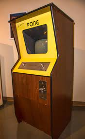
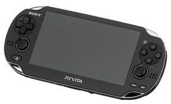
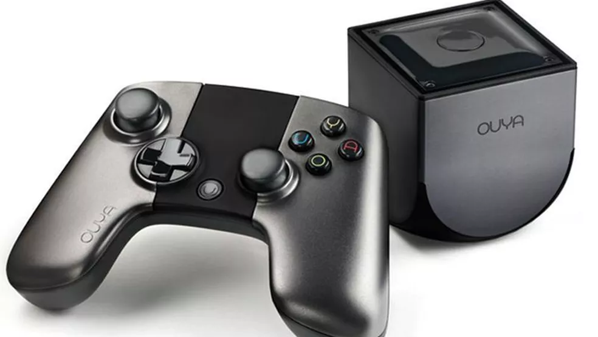
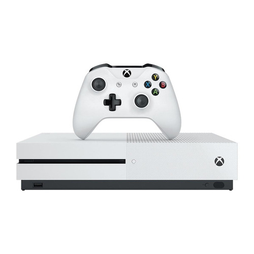
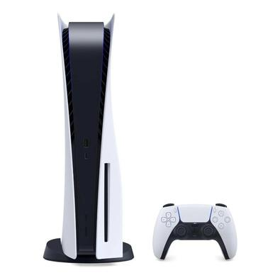
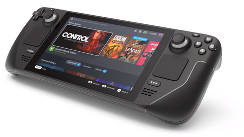

It wasn't until the 1970s and 1980s that electronic games became popular, when arcade games, electronic game consoles and computer games were introduced to the general public.
1989 - 2000
Evolution of The 2D and The start of The 3D
This is considered, for many, the golden era of videogames. Extremaly popular consoles, like the Super Nintendo and the Playstation 1, were active. Popular game franchises received some historical games, like: Mario Bros. (with Super Mario World), Zelda (with The Legend of Zelda: Ocarina of Time) and Final Fantasy (with Final Fantasy VII). This was also the start, and the end, of some brands in the console war, like Sega and Commodore.
2001 - 2010
Xbox X Playstation: The Beginnig
It was in this decade that the Xbox console emerged and the PlayStation began to be more recognized, which are nowadays giant companies and it was between this interval of years that video games stopped focusing on children only and began to invest more in games aimed at the older audience.
2011 - Now
The New Generation
The new generation of video games comes with the promise of more realistic images and much shorter game loading times. The new video games bet on a hardware architecture with exclusive processors and SSD storage, which will allow much more power and faster loading, especially for companies' exclusive games, which will make the most of the settings. On the software side, the key term of the new generation is "Ray tracing", a computer graphics algorithm that renders three-dimensional images in real time, with a very convincing simulation of light rays. As a result, it delivers much more realistic images in terms of lighting, shadows, textures and reflections.
Site by: Lucas Silva Guimarães
The Beginning
Odyssey (1971) Magnavox develops the Odyssey 100, the first video games to be connected to a TV. Nolon Bushmell creates Space computer the world's first arcade for spacewar games. In the following years odyssey 200,300,400,500,3000 and 4000 came out.

1976- Launch of Telstar Pong video game- Faurchild Camera Instrument launches Fairchild Channel F, the 1st programmable video game.
1977- Atari launches chuck and cheese Midway games launches the first gunfght game to use micro-ccessors. Developed by Taito of Japan genfight. Attract develops the VCS later called the Atari 2600.
1986, the NES was one of the most outstanding consoles of its generation. He already had games like Super Mario Bros, The Legends of Zelda and Excitebike. The video game worked with 8-bit technology, and also had a slot for cartridges, in addition to its classic controls with square corners.
1988 - Sega Genesis is a 16-bit video game console from Sega that competed directly with the Super Nintendo Entertainment System. The console was very successful in the 1990s, losing ground after the emergence and popularization of the new generation of 32-bit consoles, such as Sony's PlayStation.
Evolution of The 2D and The start of The 3D
Game Boy (1989) - Manufactured by Nintedo, it was their second portable console. It was extremely successful, selling more than 100 million copies, with the Game Boy Color. Best selling games: Tetris (1989) and Pokemon Red and Blue (1996).
Atari Lynx (1989) - Manufactured by Atari, it was the first portable console with a color LCD screen. It wasn't very successful, it was expensive compared to the Game Boy and consumed more batteries, sold around 4 million copies. Best selling game: Road blasters (1989).
Game Gear (1990) - Manufactured by Sega, it was released to compete with the Game Boy. It wasn't very successuful due the big size and the excessive battery comsuption, sold around 10 million copies. Best selling game: Sonic the Hedgehog 2 (1992).
Neo-Geo (1990) - Manufactured by SNK, it was a very expensive console, initially just for rental. It plays arcade games from SNK, it sold around a million copies. Best selling game: The King of Fighters '95 (1995).
Super Nintendo (1990) - Manufactured by Nintendo, it's the successor of the NES. It was extremaly popular during the '90s, it improved the 2D and could render some primitive 3D, like in Star Fox. Best selling game: Super Mario World (1990).
CD-i (1991) - Manufactured by Philips, it initially was just a media player, in 1991 it was released as a videogame. Few games were released for this console, the most known are licensed by Nintendo, and wasn't successful, just sold about 500.000 copies. Best selling game: Hotel Mario (1994)
3DO (1993) - Manufactured by Pansonic, the 3DO is actually a product of 7 companies, that togheter developed it. It was one the first 32-bit consoles, but it was extremely expensive, so it wasn't very sucessful, it sold around 2 million copies. Best selling game: Gex (1995)
Amiga CD32 (1993) - Manufactured by Commodore, it was the first CD-rom based console on 32-bit. It wasn't released on the US because a 10 million license was required, it sold around 100.000 copies. Best selling game: Diggers (1993)
Atari Jaguar (1993) - Manufactured by Atari, it was one of the first 64-bit consoles. Atari had a lot of troubles with the game developers, so not many games were releases, it sold about 250.000 copies. Best selling game: Alien Vs Predator (1994)
Sega Saturn (1994) - Manufactured by Sega, the successor of the Genesis. Sega commited some mistakes with the launch of the console, especially in the US, like the non release of any Sonic game, it sold about 9 million copies. Best selling games: Viruta Fighter 2 (1995) and Sega Rally Championship (1995)
PlayStation (1994) - Manufactured by Sony, it was their first console. The development of the PS1 started as an attempt to craet a CD-ROM to the Super Nintendo, but it didn't work out. It's the second most sold console in history, it sold about 100 million copies: Best selling game: Gran Turismo (1997)
Virtual Boy (1995) - Manufactured by Nintendo, it was an attempt to make an virtual relaity console. It failed completely, the virtual reality wasn't good, the console displays only red and black, and can cause headaches and seizures. It only sold about 800.000 copies, and has a pretty small library of games. Best selling game: Mario Tennis (1995)
Xbox X Playstation: The Beginnig
PS2 (2000), manufactured by Sony. The PS2 is one of the best-selling consoles of all time, with more than 155 million units sold, and the best-selling game was Grand Theft Auto: San Andreas with 17 million copies sold.
Game Boy Advance (2001) manufactured by Nintendo. The Game Boy Advance Game became popular among people who like classic games, and the best-selling game was Pokémon Ruby and Sapphire with 16 million copies sold.
Xbox (2001) manufactured by Microsoft. The Xbox was the first console offered by an American company after the Atari Jaguar stopped selling, and the best-selling game was Halo 2 with 8 million copies sold.
Gamecube (2001) manufactured by Nintendo. The GameCube is the first Nintendo console to use optical discs as its primary storage medium, and the best-selling game was Super Smash Bros. Melee with 7 million copies sold.
SwanCrystal (2002) manufactured by Bandai. SwanCrystal had a low price, and it allowed to play in both horizontal and vertical position.
Atari Flashback (2004) manufactured by Atari. The Atari Flashback system had twenty built-in games.
Nintendo DS (2004) manufactured by Nintendo. It had 154 million units sold. The letters DS in the name were created to mean both the expression Dual Screen and the best-selling game was New Super Mario Bros. with 30 million copies sold.
PSP (2004) manufactured by Sony. The PSP has other functions in addition to games, such as an audio player, video player and wireless Internet access via Wi-Fi, and the best-selling game was Grand Theft Auto: Liberty City Stories with 6.5 million copies sold.
Xbox 360 (2005) manufactured by Microsoft. Xbox 360 becoming one of the best selling consoles made by an American company with 85 million units sold and the best selling game was Kinect Adventures with 21 million copies sold.
PS3 (2006) manufactured by Sony. It had 87.5 million units sold and was the first console to use the Blu-ray disc as a media format for recording games, and the best-selling game was Grand Theft Auto V with 28 million copies sold.
Wii (2006) manufactured by Nintendo. The Wii had 100 million units sold and was Nintendo's smallest home console at the time and the best-selling game was Wii Sports with 82 million copies sold.
Nintendo DSI (2008)manufactured by Nintendo. It is one of Nintendo's last handheld video games, and the DSi ended its activities in 2017.
PSP GO (2009) manufactured by Sony. The biggest innovation that the PSP Go brings is the fact that it has bluetooth, in addition to having wi-fi and 16Gb of internal memory.
PlayStation Move (2010) manufactured by Sony. The PlayStation Move is a motion controller initially created for use in the PlayStation 3.
The New Generation
Nintendo 3DS(2011)
The different effect of 3DS is generated from stereoscopy, a technique that displays two almost identical images, with only light perspectives. When exposed to this type of image, our brain creates a third image, this one is three-dimensional and with a sense of depth.

PlayStation Vita (2011) The console is a portable model from Sony, as a successor to the PSP – PlayStation Portable. Its launch served to change the way players related to mobile platforms, with robust processors, surprising the market. After all, there are many features of the controls, which contributes to great gameplay, which, in addition to everything, still makes use of the player's creativity, who can mix touchscreen and buttons.
Nintedo Wii U (2012) WiiU disks have a capacity of 25 gigabytes. The Wii U does not play DVD or Blu-Ray discs. It can run Wii and WiiU games. *Wii U games are region locked, so if you want to play Japanese games only on the Japanese console.
Neo Geo X (2012) The Neo Geo X is a handheld video game console developed and licensed by SNK Playmore and manufactured by Tommo. It is the return of the Neo Geo console created in the nineties and comes with 20 original games pre-installed.

Ouya (2013) Ouya was presented as a revolutionary console, not in hardware, but in everything else. Despite the simple configurations, he had (or rather has) the proposal to take indie games to the living room, to compete with TV time with the consoles of major manufacturers.
Shield Portable (2013) The Shield Portable is a crossover between a portable console and a tablet from NVIDIA. The controller has a format similar to the Xbox 360 controller, it is the first device from NVIDIA to run the Tegra 4 graphics chip, it was originally called NVIDIA Shield, but since the launch of the Shield Tablet it has been called Shield Portable.
PlayStation 4 (2013) All models manufactured of the playstation, since the launch are bivolts, you can turn on your console and your television by pressing just one button of your DualShock 4, you can control the PS4 Dashboard and the applications with the remote control of your TV, use your smartphone as PS4 keyboard.

Xbox One (2013) Xbox One did a 180 degree turn on pretty much all of its initial ideas. The Microsoft console was conceived as a machine ready to be on 24 hours, always connected to the internet and with a high restriction control over your games, a DRM protection (Digital Rights Maintenance).
Nintendo Switch (2017) O Nintendo Switch é um console versátil por possuir três modos diferentes de jogo: o portátil, semiportátil e o modo TV. Para jogar no modo TV é necessário encaixar o console na base e conectá-lo na televisão por meio de um cabo HDMI.
Xbox Series X/S (2020) It also has 10GB of RAM versus the X's 16GB. Additionally, the S Series has a much lower rendering resolution ceiling of 1440p, two-thirds of the vertical pixels of 4K, can handle ray tracing and supports 1440p. at up to 120 frames per second, but games won't render at 4K.

PlayStation 5 (2020) Its futuristic appearance and size, which do not go unnoticed, were designed to properly accommodate all its internal elements and its efficient cooling system. The new DualSense controller, with buttons adaptable to any type of game, offers a unique realistic sensory experience.
Atari VCS (2020) The console whose architecture is similar to that of a computer. The model runs on a Linux-based version of the operating system and allows players to download games over the internet. Atari VCS allows both cable and WiFi connection.
Intellivision Amico (2021) The console is based on an 8-core 1.8GHz Qualcomm Snapdragon 624 system with an Adreno 506 GPU. The system supports Bluetooth, Wi-Fi, RFID, HDMI output, a microSD card slot, a charging for two Amico controllers on the top, passive cooling and a USB-C port on the back for accessories and expansions. The body also features a built-in LED ambient lighting system with 40 independently controlled LEDs that can change pattern and color in response to play, known as Interactive Guidance Lighting.

Steam Deck (2021) Steam Deck is a video game console and tablet hybrid developed by Valve. The Steam Deck includes a custom accelerated processing unit (APU) built by AMD based on their Zen 2 and RDNA 2 architectures, with the CPU running on a four-core/eight-thread unit and the GPU running on eight compute units with a estimated total performance of 1.6 TFLOPS.